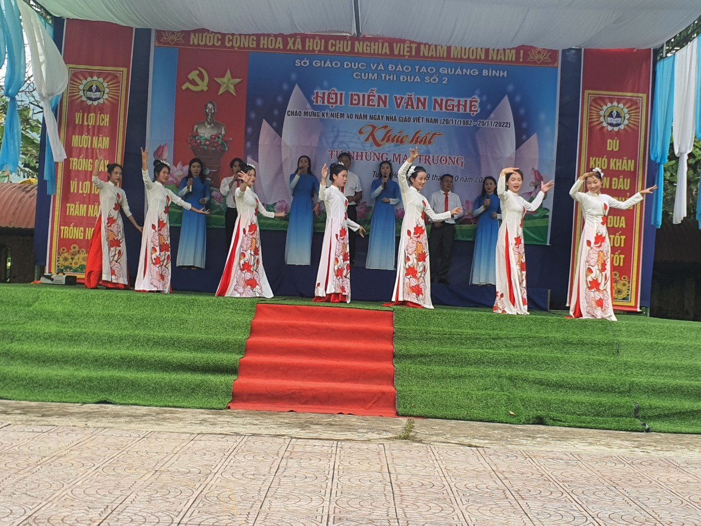
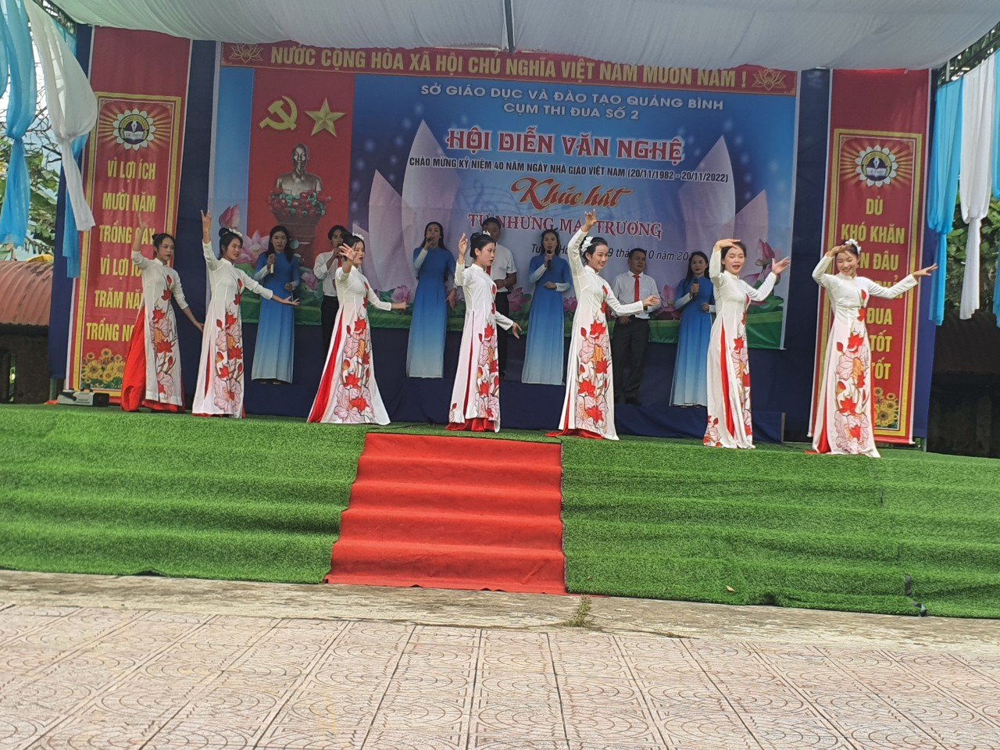
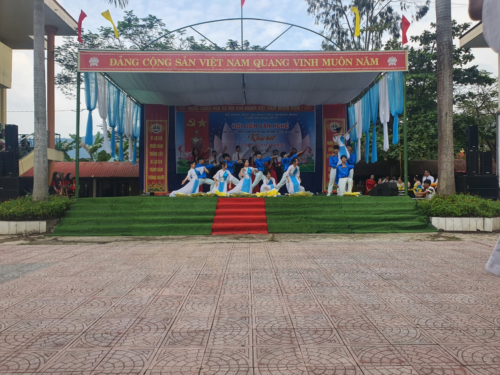
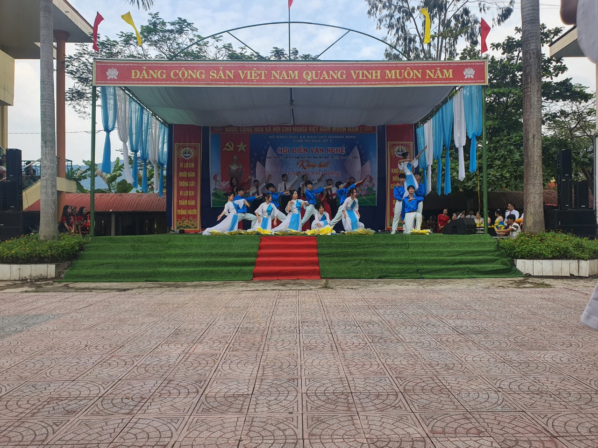

Đến tham dự có các đồng chí trong Ban Giám hiêu, Ban Giám đốc của các trường THPT và Trung tâm Giáo dục NN- Giáo dục TX trên địa bàn huyện Tuyên Hoá. Tham gia hội diễn có hơn 100 diễn viên là giáo viên và học sinh của 5 đội văn nghệ thuộc các trường THPT và Trung tâm trên địa bàn Tuyên Hoá. Các đơn vị đã mang đến cho khán giả nhiều tiết mục đặc sắc, được đầu tư và dàn dựng công phu.
Với tư cách là đơn vị đăng cai tổ chức, Trường THPT Lê Trực đã chuẩn bị đầy đủ các điều kiện, từ công tác tổ chức, an ninh trật tự, phục vụ đến cơ sở vật chất, trang thiết bị cho hội diễn. Sân khấu được trang trí hoành tráng, ấn tượng theo chủ đề. Nhà trường đã chuẩn bị 2 tiết mục mở màn có tính nghệ thuật cao để lại ấn tượng đẹp trong lòng khán giả với những điệu múa đẹp, bài hát hay và vở kịch hấp dẫn tạo nên cho khán giả những giây phút thoải mái, thích thú ngay từ lúc mở đầu hội diễn.
Theo đánh giá của Ban giám khảo các đoàn tham gia hội diễn đã có sự chuẩn bị chu đáo, xây dựng chương trình biểu diễn phù hợp với chủ đề, trang phục đẹp, đa dạng về thể loại.
Kết thúc hội diễn, Ban tổ chức đã trao một giải nhất cho đội trườngTHCS và THPT Bắc Sơn, một giải nhì cho đội trường THPT Lê Trực, một giải ba cho đội trường THPT Tuyên Hoá và 2 giải khuyến khích cho đội THPT Phan Bội Châu và Trung tâm Giáo dục NN-Giáo dục TX Tuyên Hoá. Ban tổ chức cũng đã lựa chọn 4 tiết mục xuất sắc nhất tham gia hội diễn văn nghệ chào mừng kỉ niệm 40 năm ngày Nhà giáo Việt Nam do sở GDĐT Quảng Bình tổ chức.
Ngoài ra, Ban tổ chức còn trao 3 giải A và các giải B, C cho các tiết mục biểu diễn xuất sắc.

 

 
